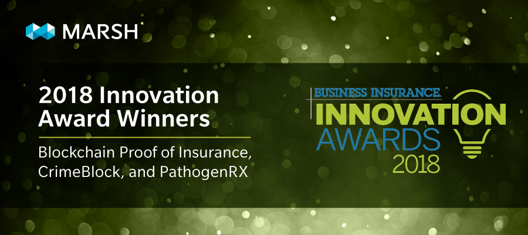
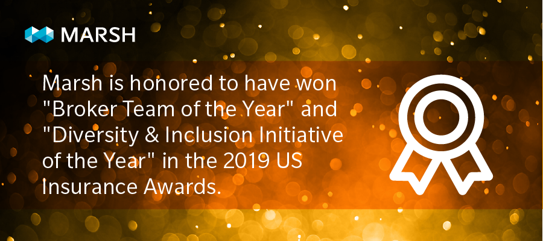
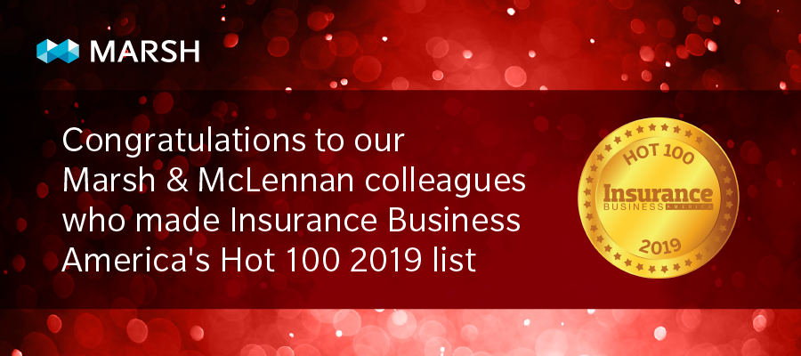

WHO WE ARE
Marsh is a global leader in insurance broking and risk management.
We help clients quantify and manage risk — and help them unlock new opportunities for growth.

WHAT WE DO
We provide industry-focused consulting, brokerage, and claims advocacy services, and leverage data, technology, and analytics to help reduce our clients’ total cost of risk.

AWARDS
Each year, Marsh USA, its colleagues, and its risk practices are recognized for achievements in customer service, innovation, industry expertise, and product development. View our recent awards below.

LEADERSHIP
Clients trust Marsh to help them thrive and survive. Our executive officers bring expertise, insight, and experience to the business of running a multifaceted, global operation.ecent awards below.
LEADING THE WAY IN TRANSPARENCY
As our client, we will always look to treat you fairly and put your interests ahead of our own.
SOCIAL RESPONSIBILITY
We are committed to conducting business in a responsible way at all times, and to supporting the communities in which we live and work through a range of programs and activities.
DIVERSITY AND INCLUSION
Since 2018, Marsh has cultivated a first-of-its-kind partnership with the Risk and Insurance Management Society (RIMS) to offer a robust suite of thought-leadership, networking events,
and educational programming opportunities-- all geared toward leading the discussion on inclusion and diversity within the risk management space. Learn more about Marsh’s partnership at RIMS 2019 in Boston.